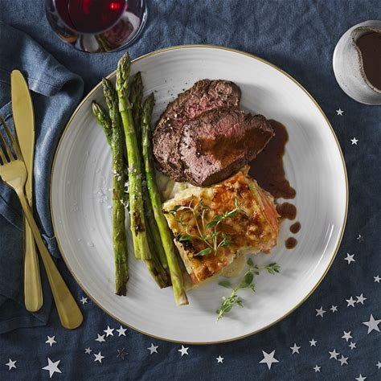

Oxfilé med potatisgratäng, rödvinssås och sparris

En lyxig middag med mör oxfilé, krämig potatisgratäng, fyllig rödvinssås och smörstekt sparris.
Tillagning: cirka 60 minuter | Svårighetsgrad: Medel | 4 portioner
Ingredienser
Oxfilé
- 600 g oxfilé
- Salt
- Svartpeppar
- Smör
- Olja
Potatisgratäng
- 800 g potatis
- 3 dl grädde
- 2 vitlöksklyftor
- 150 g riven ost
- Salt och peppar
Rödvinssås
- 3 dl rödvin
- 2 dl kalvfond
- 1 schalottenlök
- 1 msk smör
- 1 tsk socker
- Salt och peppar
Sparris
- 1 knippe grön sparris
- 1 msk smör
- Salt
Gör så här
Potatisgratäng
- Skala och skiva potatisen tunt.
- Hacka vitlöken.
- Lägg potatisen i en ugnsform.
- Häll över grädde och tillsätt vitlök, salt och peppar.
- Strö över den rivna osten.
- Grädda i ugnen på 200 grader i cirka 45 minuter.
Oxfilé
- Krydda oxfilén med salt och svartpeppar.
- Hetta upp en stekpanna med olja och smör.
- Bryn köttet runt om.
- Stek tills köttet har önskad innertemperatur.
- Låt köttet vila några minuter innan servering.
Rödvinssås
- Hacka schalottenlöken fint.
- Fräs löken i smör.
- Tillsätt rödvin och kalvfond.
- Tillsätt sockret.
- Låt såsen koka ner tills den blir fyllig.
- Smaka av med salt och peppar.
Sparris
- Skär bort den nedersta delen av sparrisen.
- Stek sparrisen i smör i några minuter.
- Krydda med lite salt.
Servering
Servera oxfilén med potatisgratäng, rödvinssås och smörstekt sparris.